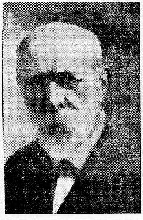

Ar c'hont hag ar gornandonez
Le comte et la fée
The count and the fairy
2 versions du "Roi Renaud" collectées par E. Ernault
à Plougonver et à Trévérec, publiées dans "Revue des traditions
populaires" Tome XIV 1899 pp.675 à 682
1° Ar C'hont hag ar Gornandonez
1° Le comte et la Fée * The Count and the Fairy
|
BREZHONEG AR C'HONT HAG AR GORNANDONEZ 1. Bugale 'r c'hont a Veselon [1] Lar an dud a zo tud a feson; Merc'h ar c'hont zo abret dimet, Kar n'e deuz bla nemeit c'houezek. 2. Kar n'e deuz bla nemeit c'houezek; Eur mab bihan abenn seitek. Ar c'hont yaouank a c'houlenne Digant e bried neuze: 3. Ma friet kés, mar am c'héret, Da chaseal renkan monet; Da chaseal renkan monet Pe eun tam kik kad pe kik kevelek; 4. Eun tam kik kad pe kik kevelek A so dilikat da gavet. 5. Ebarz ar c'hoat p'en e ariet, Eur gornandonez 'n eus rankontret, 'Gornandonez gwisket en gwenn Ha barz 'n hi dorn eur groaz-nouen [2]. 6. Na bonjour ha joa [3], otrou kont, Me oa pell-zo klask da rankontr, Ha breman pe 'm eus da rankontret E renkes d'in bean dimeet [4]. 7. Yaouankik mad e ma vriet, D'eureuji korandonezet. 8. Daoust d'it pe vervel 'dan dri dé Pe chom seiz la war da wele; Pe chom seiz la war da wele Ha mervel neuzen kouskoude. 9. Ebarz er ger p'en e ariet, D'e vam en deus lavaret: Gret d'in ma gwele ha gret-an ez, Kar ma c'halon baour zo dies. 10. Er c'hoad de chaseal on bet, Eur gorandonez 'm eus rankontret, 'N eus goulet ganin pe vervel didan tri de Pe chom seiz vla war gwele; 11. Pe chom seiz vla war ma gwele Ha mervel neuzen kouskoude. Ma mammik kés, mar em c'heret, N'anzavet ket deuz ma vriet; 12. N'anzavet ket deuz ma vriet Ken a ve tri mis a vo vin interet. 13. An itron a c'houlenne Digant hi mam-gaer eno neuze: Petra zo néventi en ti-man, Ma klevan domestiket e welan? 14. Eur paour oa lojet en noz-man Hag a zo deseded aman. Le ket gantan eizet ha chervich Ha dé ha bla pe 'man ar gis; 15. Dé ha bla pa vo komandet Me akordo ze gant ma vriet. Ar varones a c'houlenne Gant hi mam-gaer, de warlerc'h er beure: 16. Petra zo néventi en ti-man, Ma glevan ma votret o welan ? Gwellan marc'h karaos a oa 'n ho ti Zo taged en noz-man gand ar bleizi. 17. Leret d'e tewel, na welond ket, Me akordo ze gand ma vriet. Ar varonez [5] a c'houlenne Diant hi mam-gaer, 'benn eis té goude: 18. Ma mam-gaer, d'i-me leret, Pera zo kôz 'barz en du em gwisket? 'Barz er vro-man ema ar gis 'Ha 'r varonez en du d'an ilis. 19. Ma mam-gaer, d'i-me leret, Piou em skabel oa interet? Nac'h diouac'h kén nen allan ket, Ho pried ar baron zo disédet! 20. Dalet, ma mam, an alc'houeo, Ha ma re grec'h ha ma re draou; Ha ma re grec'h ha ma re draou, Ha gret ervad d'ar minor paour; 21. Hen zo bugelik yaouank mad Kouls abeurz mam vel abeurz tad! (Kanet gant ar vaouez añvet Sité, e Plougonver). |
FRANCAIS LE COMTE ET LA FEE 1. Les enfants du comte de Besselon [1] les gens disent que ce sont des gens distingués; la fille du comte est mariée de bonne heure car elle n'a que seize ans. 2. Car elle n'a que seize ans; un petit enfant (lui est né) à dix-sept. Le jeune comte demandait à sa femme, alors: 3. Ma chère femme, si vous m'aimez, il faut que j'aille chasser; il faut que j'aille chasser ou un morceau de chair de lièvre, ou de chair de bécasse; 4. Un morceau de lièvre ou de bécasse est agréable à avoir, 5. Dans le bois quand il est arrivé, il a rencontré une fée; une fée vêtue en blanc et dans sa main une extrême-onction. [2] 6. Bonjour et joie, [3] seigneur comte; j'étais depuis longtemps à chercher à te rencontrer; et maintenant que je t'ai rencontré il faut que tu m'épouses. [4] 7. Mon épouse est bien jeunette, pour que j'épouse des fées. 8. Choisis: ou de mourir sous trois jours ou de rester sept ans sur ton lit; ou de rester sept ans sur ton lit et mourir alors tout de même. 9. A la maison quand il est arrivé, il a dit à sa mère: Faites-moi mon lit et faites-le aisé, car mon pauvre cur est mal à l'aise. 10. Je suis allé chasser au bois, j'ai rencontré une fée qui m'a donné à choisir, ou de mourir sous trois jours ou de rester sept ans au lit; 11. Ou de rester sept ans sur mon lit et mourir alors tout de même. Ma chère petite mère, si vous m'aimez, n'avouez pas à ma femme; 12. N'avouez pas à ma femme jusqu'à ce qu'il y ait trois mois que je sois enterré. 13. La dame demandait à sa belle-mère, là, alors: Quelle nouvelle y a- t-il en cette maison, que j'entends les domestiques pleurer? 14. Un pauvre était logé cette nuit et il est décédé ici. Mettez pour lui octave et service, et anniversaire, puisque c'est la coutume; 15. Quand l'anniversaire sera recommandé, j'arrangerai cela avec mon mari. La baronne (comtesse) demandait à sa belle-mère, le lendemain matin: 16. Quelle nouvelle y a-t-il en cette maison, que j'entends mes valets pleurer? - Le meilleur cheval de carrosse qui fût chez vous a été étranglé cette nuit par les loups. 17. Dites-leur de se taire, de ne pas pleurer, j'arrangerai cela avec mon mari. La baronne [5] demandait à sa belle-mère, huit jours après: 18. Ma belle-mère, dites-moi qu'est-ce qui est cause que vous m'habillez en noir? Dans ce pays c'est la coutume que la baronne aille en noir à l'église. 19. Ma belle-mère, dites-moi qui a été enterré dans mon banc? Je ne puis plus vous le cacher, votre mari le baron est mort! 20. Tenez, ma mère, mes clefs, et celles d'en haut et celles d'en bas; et celles d'en haut et celles d'en bas; et soignez bien le pauvre orphelin; 21. C'est un petit enfant bien jeune (orphelin) de mère comme de père! (Chanté par la femme nommée Sité à Plougonver Traduction de E. Ernault [1] Ce pourrait être aussi "Messelon", ou "Vesselon". [2] Variante: "Ha 'n hi dorn eur groazik-nouen" « et dans sa main une petite extrême-onction ». [3] Var. "Na bonjour, 'mei" « bonjour, dit-elle ». [4] Var. "Ha dimein din a réfet" « et vous m'épouserez ». [5] Var. "ar gontez", "la comtesse." |
ENGLISH THE COUNT AND THE FAIRY 1. The children of Count Besselon [1] are said to be prominent people; The count's daughter early married For she is but sixteen. 2. For she is but sixteen; (She gave birth to) a son when she was seventeen. The young count asked His wife, then: 3. My dear wife, if you love me (tell me), I am going to hunt something for you; I am going to hunt something for you Shall it be flesh of hare or of snipe; 4. A bit of hare or of snipe flaesh I would be delighted to have, 5. When he entered the wood, he encountered a fairy; a fairy clad in white who held in her hand an Extreme Unction cross. [2] 6. Good day and joy to you, [3] Lord Count; I have been longing to meet you for long; And now I have met you and you must marry me. [4] 7. My wife is too young, and I would not change for a fairy. 8. Your choice: either you die within three days or you lie seven years on your bed; or you lie seven years on your bed and you will die all the same. 9. At home when he arrived, he told his mother: Make my bed and make it snug, for my poor heart feels ill at ease. 10. I was out hunting in the wood, I encountered a fairy who gave me a choice: either die within three days or lie in bed for seven years; 11. Or lie in bed for seven years and die afterwards even though . Dear little mother, if you love me, don't tell my wife; 12. Don't say a word to my wife until three months have passed since I was buried . 13. The lady asked her mother-in-law, then: What's new in this house?, Why do I hear the servants weep? 14. A poor lodged here overnight and he died here. A mass shall be read for him, in a week, in a month, and in a year, as custom requires. 15. When the anniversary mass will be said, I'll settle it with my husband. The baroness (countess) asked her mother-in-law, early next morning: 16. What's news, in this house I hear my menservants cry? - The best carriage horse we had was strangled by wolves. 17. Tell them to be silent, not to cry, I'll settle it with my husband. The baroness [5] asked her mother-in-law, eight days later: 18. My dear mother-in-law, tell-me The reason why you dress me in black? In this country, such is the custom A baroness go churching in black. 19. My mother-in-law, tell me Who is beried beneath my bench? I can't conceal it any longer, Your husband, the Baron, is dead! 20. Mother, here are my keys, to both upper and lower part of the house; to both upper and lower part of the house; Take good care of the young orphan; 21. He is very young indeed He will be a father- and motherless child! (Chanté par la femme nommée Sité à Plougonver Translation by E. Ernault [1] It could also be "Messelon", or "Vesselon". [2] Variant: "Ha 'n hi dorn eur groazik-nouen" « an in her hand, a little Extreme Unction cross ». [3] Var. "Na bonjour, 'mei" « good day, she said ». [4] Var. "Ha dimein din a réfet" « and you shall marry me ». [5] Var. "ar gontez", "the countess." |
2° Yannik ar C'hont hag e bried
2° Le comte Jeannot et sa femme * Count Johnny and his wife
|
BREZHONEG YANNIG AR C'HONT HAG E BRIED 1. Yaneik ar c'hont hag i briet A zou yaouankik mad diméet; 2. A zou yaouankik mad diméet: Heman daouzek bla, heman trizek; 3. Heman daouzek bla, heman trizek, Eur mabik bihan o-deuz bet. 4. Eur mabik bihan ker kaer hag an dé, Med ne vo zant, a vou roue! 5., Yaneik ar c'hont a lavare Ha d'i briet hag aneuze: 6. O ma vriet, d'eign o léret Ha petra a vad a depéet? 7. Pe eun tam kik kok, pe eun tam kik yar, Pe otraman eun tam kik klujar ? 8. C'houlan nag ar c'hik kok, na tam kik yar, Na kenneubet eun tam kik klujar: 9. Kik kevelek ma'm ije ' Marteze me' n debfe. 10. Et 'ta, ma meveilhon, d'ar vaelanek, Me va d'ar c'hoat ma unan-pen Ha' gasou ganein ma levran wen. 11. 'Barz er c'hoat pa'n e ariet, Eur gornandonez 'n eus remarket. 12. Bonjour d'ac'h, 'mei, Yaneik ar c'hont, E oan pell a zou klask ho rankontr; 13. Me brema, 'mei, p'em eus ho rankontret, Ma heureujein e renkéhet. 14. Ho heureujein na' n hallan ket, Yaouankik mad e ma vriet: 15. Me zou daouzek la, hi zou trizek; Me zou daouzek la, hi zou trizek; Eur mab bihan hi deuz bet; 16. Eur mab bihan ker kaer hag an dé, Med na vezo zand e vou roue. 17. Daouist d'ac'h pe ma heureujein breman. Pe chom seiz la da langisan? 18. Gvell e ve ganein mervel breman 'Vit chom seiz la da langisan. 19. Yaneik ar c'hont a lavare Er ger, d'e vam, p'en arie: O ! gret d'in ma gwele, 20. Ha ma hin grét, grét-an es Kar ma c'halon a zou dies! 21. Me a renkou mervel breman Pe chom seiz la da langisan. 22. Ar gontes yaouank a c'houle Ouz hi mam-gaer hag aneuze: 23. Petra a neve zou en ti-man? Me gle ma meveilhon o wolan. 24. Kaeran marc'h oa er marchosi A zou marvet en noz-man. 25. O ! leret d'e na wolant ket, Me dennou eskus gant ma vriet. 26. Ar gontes yaouank a c'houle Ouz hi mam-gaer hag aneuze: 27. Petra a néve zou en ti-man, Me glê ma métejon e wolan? 28. Kaeran nisel gare oa o c'houe Zo laeret en noz-man. 29. O! leveret d'e na wolant ket Me dennou eskus gant ma vriet. 30. Ar gontes yaouank a c'houle Ouz hi mam-gaer hag aneuze: 31. Petra a neve zou en ti-man, Me glê ar veleien e kanan? 32. Eur paour a oa aman lojet Ha 'vid en noz ec'h e marvet. 33. Ar gontes yaouank a lère Ha d'hi mam-gaer hag aneuze: 34. O ma mam-gaer, leret-hu d'in Ha pesord abid a wiskin? 35. Aman, ma merc'h, eman ar c'his E ha ar gontezet en du d'an ilis. 36. Gand an hent p'en ind avanset, Mesarien dénvet o deus kavet; 37. Ma lere 'n eil d'egile 'ne: Ari e he intanves Yan ar c'hont. 38. Chileoet, ma mam, pesord o deus laret: Intanves Yan ar c'hont o deus laret. 39. O ! emei, ma merc'h, na jénet ket, Honnez e intanves kont ar vesarien dénvet. 40. Barz en ilis pa'n e antreet, - Ouz hi mam-gaer hi-deuz goulet: 41. Petra a néve a zou aman, P'en e drailhet korn er skabel er giz-man? 42. Beteg aman, ma merc'h, am euz nac'het; - Nac'h ouzoc'h ken na'n hallan ket: 43. Ho priet zou marv hag interet, - Dinan gorn ho skabel e he laket. 44. Ar gontes yaouank, pa hi deus klevet, - Taer gwech d'an douar e zemplet; 45. Taer gwech d'an douar e zemplet - Hag hi mam-gaer en eus hi zavet. 46. Darc'het, ma mam, an alc'houeo, - Ha re a kroec'h ha re a traou, - Ha gret ervad d'am minoreik paour. (Kanet e Treverek (Tregor), gant Ana Gaillard (80 bloaz). |
FRANCAIS LE COMTE JEANNOT ET SA FEMME 1. Le comte petit Jean et sa femme se sont mariés bien jeunes; 2. Se sont mariés bien jeunes: lui douze ans, elle treize. 3. Lui douze ans, elle treize; ils ont eu un petit enfant, 4. Un petit enfant aussi beau que le jour; à moins qu'il ne soit saint, il sera roi. 5. Le comte petit Jean disait à sa femme, alors: 6. 0 ma femme, dites-moi, que mangerez-vous? 7. Ou un morceau de coq, ou un morceau de poule, ou un morceau de perdrix? 8. Je ne. veux ni du coq, ni de la poule ni non plus de la perdrix: 9. Si j'avais de la bécasse, peut-être en mangerais-je. 10. Allez donc, mes valets, au champ de genêt, je vais au bois, tout seul. 11. Dans le bois quand il est arrivé il a aperçu une fée. 12. Bonjour à vous, dit-elle, comte petit Jean ; il y avait longtemps que je cherchais à vous rencontrer; 13. Mais maintenant, dit-elle, que je vous ai rencontré, il faudra que vous m'épousiez. 14. - Je ne puis vous épouser, ma femme est toute jeune; 15. J'ai douze ans, elle eu a treize; j'ai douze ans, elle en a treize, elle a eu un petit enfant, 16. Un petit enfant aussi beau que le jour; à moins qu'il ne. soit saint, il sera roi; 17. Que choisissez-vous, ou de m'épouser maintenant, ou de rester sept ans à languir? 18. J'aime mieux mourir maintenant que de rester sept ans à languir. 19. Le comte petit Jean disait à la maison, à sa mère, quand il arrivait: Oh ! faites-moi mon lit, 20. Et si vous le faites, faites-le aisé, car mon cur est mal à l'aise. 21. Il faudra que je meure maintenant ou que je reste sept ans à languir. 22. La jeune comtesse demandait à sa belle-mère, alors: 23. Qu'y a-t-il de nouveau dans cette maison? j'entends mes valets pleurer. 24. Le plus beau cheval qui fût dans l'écurie est mort cette nuit. 25. Oh ! dites-leur de ne pas pleurer, je les excuserai auprès de mon mari. 26. La jeune comtesse demandait à sa belle-mère, alors: 27. Qu'y a-t-il de nouveau dans cette maison? j'entends mes servantes pleurer. 28. Le plus beau drap carré qui fût dans leur lessive a été volé cette nuit. 29. Oh ! dites-leur de ne pas pleurer, je les excuserai auprès de mon mari. 30. La jeune comtesse demandait à sa belle-mère, alors: 31. Qu'y a-t-il de nouveau dans cette maison? j'entends les prêtres chanter. 32. Un pauvre était logé ici et cette nuit il est mort. 33. La jeune comtesse disait à sa belle-mère, alors: 34. O ma belle-mère, dites-moi, quel vêtement mettrai je? 35. Ici, ma fille, c'est la coutume que les comtesses vont à l'église en noir. 36. Quand elles sont avancées sur la route, elles ont trouvé des bergers; 37. Ils se disaient l'un à l'autre: Voici la veuve du comte Jean. 38. Écoutez, ma mère, qu'est-ce qu'ils ont dit? Ils ont dit : la veuve du comte Jean. 39. Oh ! dit-elle, ma fille, ne vous inquiétez pas; celle-là est la veuve du comte des bergers. 40. Quand elle est entrée à l'église, elle a demandé à sa belle-mère: 41. Qu'y a-t-il de nouveau ici, que le coin de mon banc est ainsi haché? 42. Jusqu'ici, ma fille, je l'ai caché; je ne puis vous le cacher davantage: 43. Votre époux est mort et enterré; on l'a mis sous le coin de votre banc. 44. La jeune comtesse, quand elle a entendu, - est tombée trois fois à terre, évanouie. 45. Elle est tombée trois fois à terre, évanouie, et sa belle-mère l'a relevée: 46. Tenez, ma mère, les clefs, et celles d'en haut et celles d'en bas, et soignez bien mon pauvre petit orphelin. (Chanté à Trévérec (Trégor), par Anne Gaillard (80 ans). |
ENGLISH COUNT JOHNNY AND HIS WIFE 1. Count Johnny and his wife were very young when they married; 2. Were very young when they married: He was twelve, she was thirteen. 3. He was twelve, she was thirteen; They have had a little son, 4. A little son as fair as daylight; If he does not become a saint, he will be a king. 5. Count Johnny said then to his wife: 6. 0 my wife, tell me, What do you want to eat? 7. A bit of cock meat, or a bit of hen or a bit of partridge? 8. Neither cock nor hen or partridge: 9. If I had some snipe meat, Maybe I would eat a bit of it. 10. Go my servants, to the broom field, I'm going to the wood all by myself. 11. When in the wood he arrived he spied a fairy. 12. Good day to you, she said, Count Johnny; I have tried for a long time to meet you; 13. But now I have met you, and you must marry me. 14. - I cannot marry you, my wife is very young; 15. I am twelve, she is thirteen; I am twelve, she is thirteen, And she just have had a little child, 16. A little son as fair as daylight; If he does not become a saint, he will be a king. 17. Which do you choose? Either you marry me, or you lie sick in bed seven years? 18. I'd rather die now than lie sick seven years. 19. Count Johnny called to his mother when he reached home: Oh! make my bed, 20. And if you make it, make it snug, for my heart is ill at ease. 21. I am to die right now or to lie sick in bed seven years. 22. The young countess asked her mother-in-law, then: 23. What has happened in this house? I hear the men-servants weep. 24. The best horse that was in the stable died during the night. 25. Oh! tell them not to weep, I will beg my husband's pardon for them. 26. The young countess asked her mother-in-law, then: 27. What's amiss in this house? I hear my maids weep. 28. The finest square piece of linen in the washing was stolen during the night. 29. Oh! tell them not to cry, I will beg my husband's pardon for them. 30. The young countess asked her mother-in-law, then: 31. What did happen in this house? I hear the priest chanting. 32. A poor person whom we had lodged here has died in the night. 33. The young countess asked her mother-in-law, then: 34. O my mother-in-law, tell me what dress should I wear? 35. Here, daughter, the custom requires that countesses should go to their churching in black. 36. When they were on their way to church, they encountered shepherds; 37. Who said to one another: This is Count John's widow. - 38. Did you hear, mother, what they've said? They did say: "The widow of Count John." 39. Oh! she said, daughter, don't worry; They meant the widow of the Count of the shepherds. 40. On arriving at the church, she asked her mother-in-law: 41. She asked: what's new in here , why was the corner of my bench chopped in that way? 42. Hitherto, daughter, I concealed it; I can no longer conceal it: 43. Your husband is dead and buried; Is buried in the corner under your bench. 44. When the young countess heard it, - three times she fell and swooned. 45. Three times she fell on the ground and swooned, and her mother-in-law helped her up: 46. Here, my mother, are the keys, to the upper and to the lower rooms, and take good care of my little orphan. (Sung at Trévérec (Trégor), by Anne Gaillard (aged 80 years). |

Emile Ernault (1852 - 1938)
Retour à "Aotroù Nann"
Table